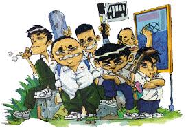

selamat datang di cerpenku
pilih halaman dari menu kiri untuk membaca, melihat poster, atau tinggalkan komentar.
tips:
komen yang santun
komen yang santun

ringkasan
rama, bocah sing aslina apik, keseret pergaulan ala amarga pengaruh kancane. dheweke mulai bolos, ngerokok, lan nganti nyolong helm. sawise kejadian kuwi, rama ngrasakke salah banget lan banjur ngaku marang gurune. karo bantuan ibune lan sekolah, rama ninggalake kanca sing gawe rusak lan bali menyang dalan sing bener